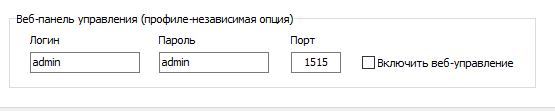
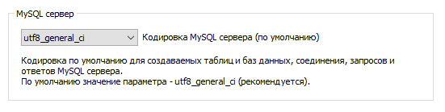
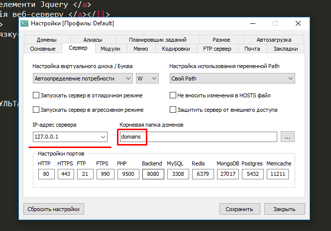

ПОСИЛАННЯ НА РЕЗУЛЬТАТ
Я ВСТАНОВИВ ПОРТ 1515 ТА ЗАЛИШИВ ДЕФОЛТНІ ЗНАЧЕННЯ ДЛЯ ЛОГІНУ И ПАРОЛЮ

ДЛЯ ДАЛЬНЕЙШЕГО ИСПОЛЬЗОВАНИЯ УСТАНОВИЛ КОДИРОВКУ UTF-8
ЭТО РАСПРОСТРОНЕННЫЙ СТАНДАРТ КОДИРОВАНИЯ СИМВОЛОВ,
ОН ПОЗВОЛЯЕТ БОЛЕЕ КОМПАКТНО ХРАНИТЬ И ПЕРЕДАВАТЬ СИМВОЛЫ ЮНИКОДА

IP - INTERNET PROTOCOL. ЭТО УНИКАЛЬНЫЙ ИДЕНТИФИКАТОР
КОТОРЫЙ ПОЗВОЛЯЕТ ПОДКЛЮЧИТСЯ К ГЛОБАЛЬНОЙ СЕТИ. В НАШЕМ СЛУЧАЕ
( В СЛУЧАЕ ЛОКАЛЬНОЙ СЕТИ ) ТРЕБУЕТСЯ УНИКАЛЬНОСТЬ АДРЕСА В ПРЕДЕЛАХ СЕТИ
